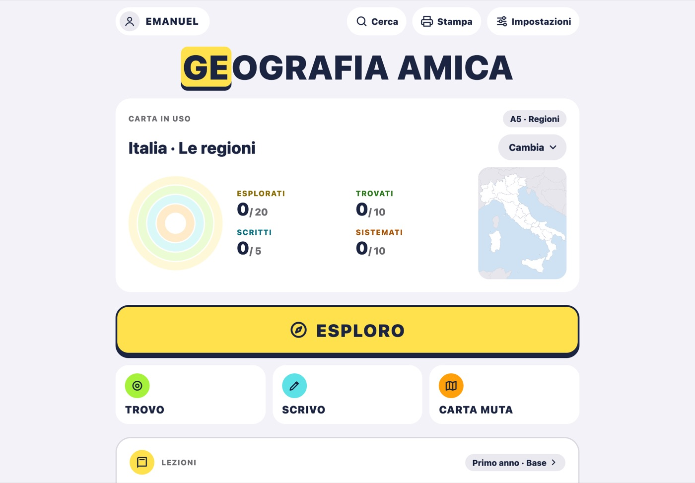
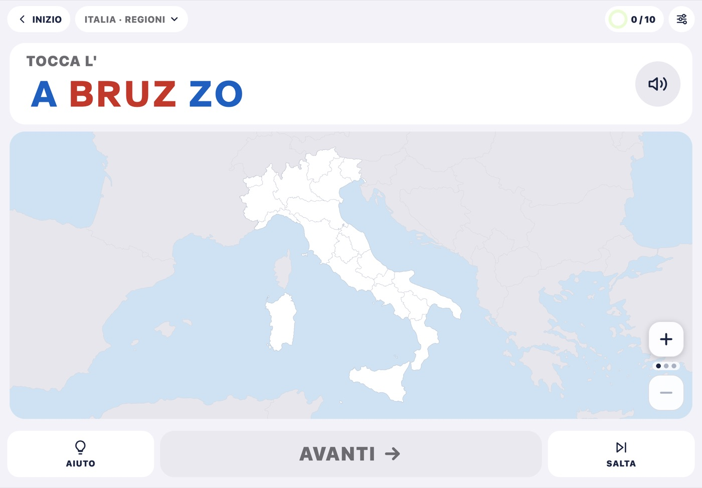
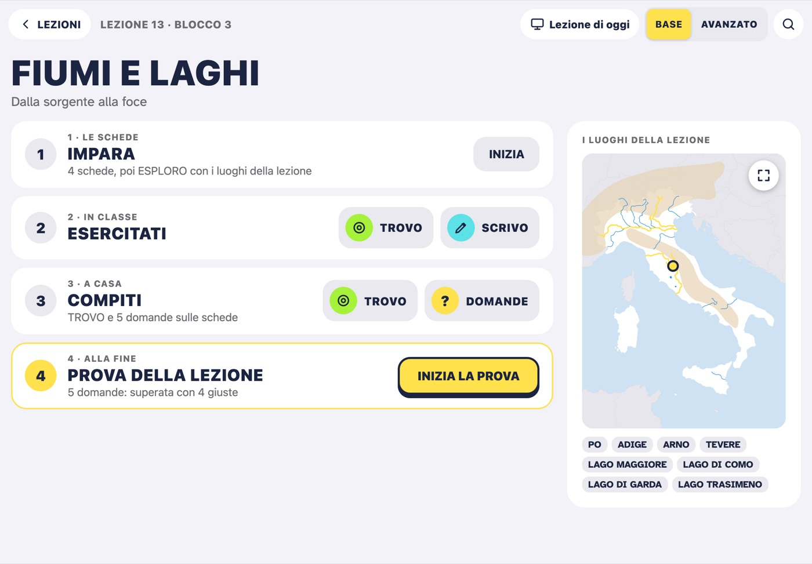
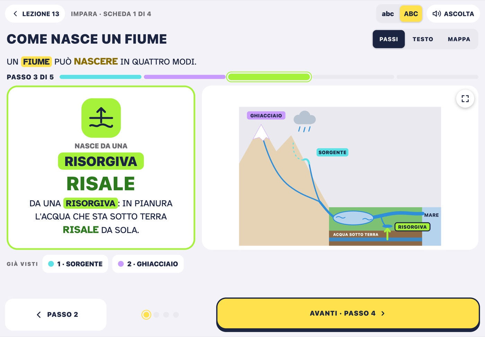
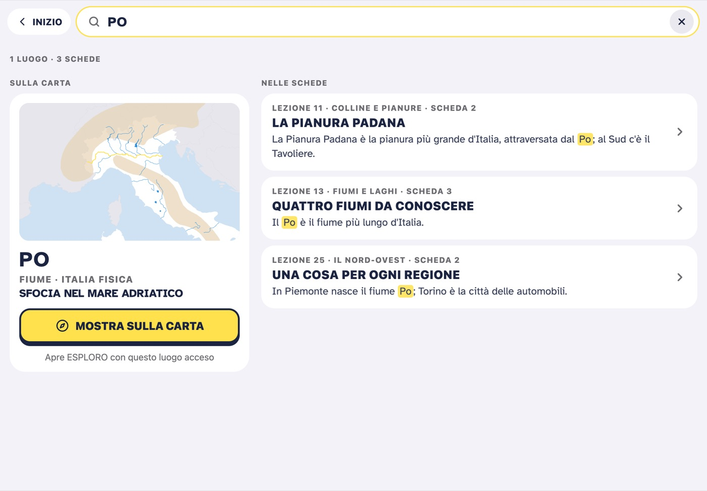
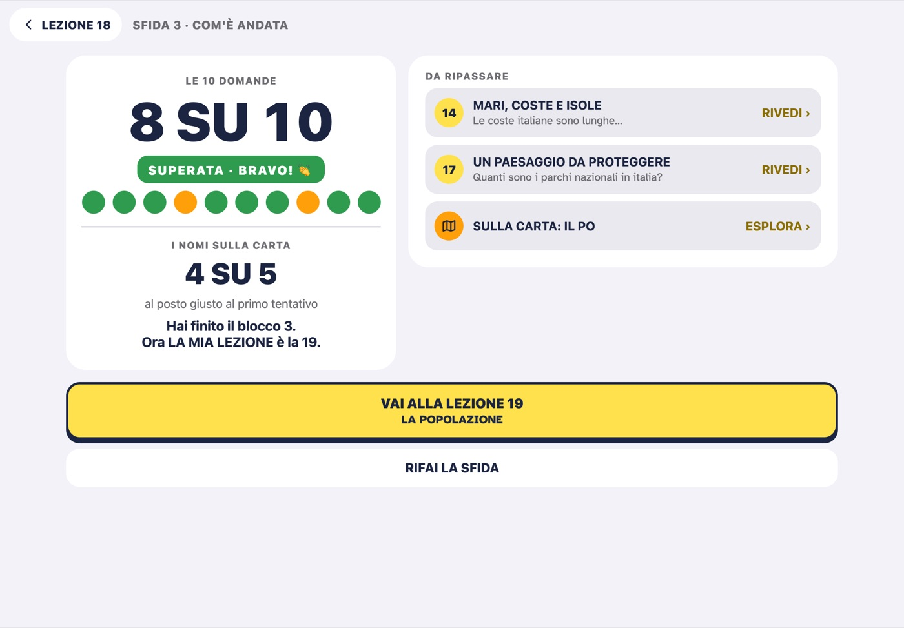
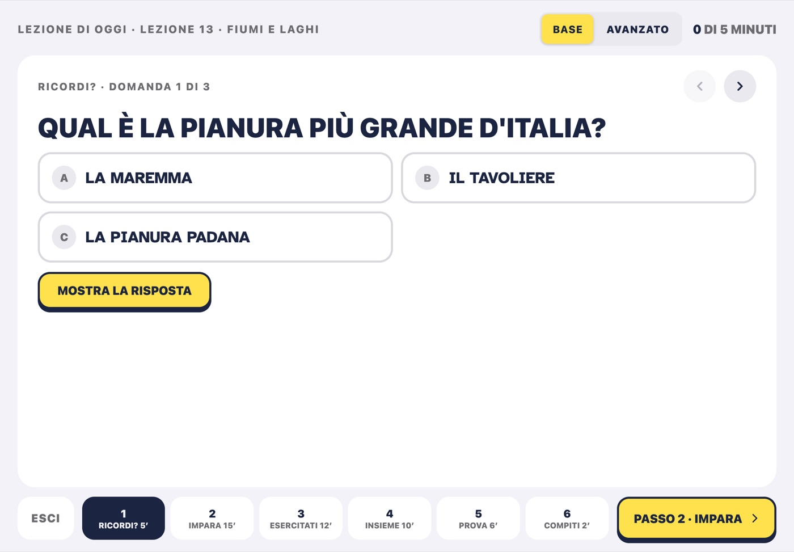

GEOGRAFIA AMICA
Guida
Come funziona l'app, per il prof
La stessa guida c'è anche dentro l'app: Impostazioni › Guida, o in fondo alla schermata iniziale.
Per cominciare
Geografia Amica è fatta per chi impara la geografia, anche con difficoltà di lettura, di scrittura o di attenzione. Si usa soprattutto su iPad, accanto all'alunno, e funziona anche su iPhone. Non serve internet e non c'è nessun account: tutto resta sul dispositivo.
Gli alunni. In alto a sinistra c'è il nome dell'alunno attivo. Tenendolo premuto un momento (un tocco breve non fa niente) si apre l'elenco degli alunni, che è per il prof: toccando un nome, quell'alunno diventa l'alunno attivo; Nuovo alunno ne aggiunge uno, che diventa subito quello attivo. Obiettivi, Progressi, Cambia nome ed Elimina valgono per l'alunno attivo; l'ultimo alunno non si può eliminare. Ogni alunno ha le sue impostazioni, la sua carta in uso, i suoi obiettivi e il suo lavoro: cambiando alunno cambia anche la carta in uso.
La schermata iniziale. In alto Cerca, Stampa e Impostazioni. Sotto, la carta in uso con gli anelli di oggi; poi le quattro attività: ESPLORO, grande e giallo, e TROVO, SCRIVO, CARTA MUTA; poi il riquadro LEZIONI e GIOCA CON LA CLASSE. In fondo i consigli d'uso.
Cosa studi? Con Cambia, nella carta in uso, o toccando carta e argomento in alto in ogni attività, si sceglie che cosa studiare. Le carte pronte (il mondo, l'Italia, l'Europa, l'Asia, l'Africa, le Americhe, l'Oceania) hanno argomenti con un codice di livello, come A5 o B2: l'alunno vede solo il codice, e a quale classe corrisponde lo dice la Guida ai livelli, nella stessa finestra. Con Scegli tu cosa studiare si prepara un gruppo di luoghi (per esempio le regioni del Nord), che poi si può scegliere con ogni alunno.
Le impostazioni valgono solo per l'alunno attivo: la voce, l'aspetto (i nomi divisi in sillabe o interi, il carattere, il colore dell'evidenziatore), ognuna delle quattro attività, le lezioni. Il pulsante delle impostazioni c'è anche dentro le attività.
Per tornare indietro c'è il pulsante in alto a sinistra, che dice dove si torna (INIZIO, LEZIONI, CERCA…). Si può anche partire con il dito dal bordo sinistro dello schermo e andare verso destra.

Le quattro attività
Le attività funzionano su qualunque carta, argomento, gruppo o lezione. Sulla carta l'errore non si segna mai in rosso: in TROVO e nella CARTA MUTA, dopo due tentativi sbagliati, il posto giusto lampeggia piano.
ESPLORO. A ogni tocco di AVANTI si accende un luogo, in un ordine sensato (le regioni da nord a sud). Il nome compare in stampato maiuscolo, diviso in sillabe, e la voce lo legge; sotto c'è una sola informazione, come il capoluogo, la capitale o dove sfocia un fiume. INDIETRO torna al luogo prima; AUTO va avanti da solo, un luogo ogni 4 secondi (si ferma con STOP); ASCOLTA rilegge il nome e l'informazione. Toccando un luogo sulla carta lo si accende e lo si ascolta. All'ultimo luogo AVANTI diventa FINE! e torna alla schermata iniziale.
TROVO. «TOCCA LA LOMBARDIA»: il luogo trovato si colora. Un tocco sbagliato non si segna; dopo due tocchi sbagliati, o con AIUTO, il luogo giusto lampeggia piano. Un tocco sul mare, quando non si cerca un mare, è una distrazione e non conta. SALTA passa al luogo dopo senza contare.
SCRIVO. Un luogo si accende e l'alunno ne scrive il nome con la tastiera grande, nelle caselle divise in sillabe; spazi, apostrofi e trattini sono già scritti. Con la correzione «lettera per lettera» la lettera sbagliata non entra e il tasto si colora un attimo; dopo due errori di fila si illumina il tasto giusto. Con la correzione «alla fine del nome» le caselle sbagliate diventano rosse, da riscrivere. AIUTO scrive la lettera dopo, e quel nome vale mezzo. Con il dettato la voce dice il nome. Alla fine del giro c'è un riepilogo per il prof.
SCRIVO con la Apple Pencil, solo su iPad: si sceglie in Impostazioni › SCRIVO › Scrivo con. L'alunno scrive il nome a mano su una riga grande; l'iPad legge la scrittura senza internet e, se non legge il nome giusto, mostra come si scrive, senza contare un errore (ERA GIUSTO, per il prof, corregge una lettura sbagliata).
CARTA MUTA. Pochi nomi alla volta (3, 5 o 8, dalle impostazioni) da trascinare al loro posto, oppure da toccare e poi toccare il posto. Un nome sbagliato torna indietro senza segni; dopo due errori sullo stesso nome il posto giusto lampeggia. STAMPA prepara la scheda da fare su carta o il lavoro fatto, con il nome e la data.
La carta si ingrandisce allargando due dita, o con + e −, e con due dita si sposta; CARTA INTERA la fa vedere tutta.
Gli anelli. Ogni attività riempie il suo anello: ESPLORATI, TROVATI, SCRITTI, SISTEMATI. Un luogo trovato, scritto o sistemato con l'aiuto vale mezzo. In ESPLORO contano solo i luoghi raggiunti con AVANTI o AUTO, non quelli toccati sulla carta.

Le lezioni
Le lezioni sono per le medie: 90 lezioni in tre anni di studio. Il primo anno è l'Italia, con gli strumenti del geografo; il secondo anno l'Europa; il terzo anno il mondo. Ogni anno ha 30 lezioni, una a settimana, in blocchi di sei: cinque lezioni e una sesta di ripasso, con la SFIDA.
L'anno e la versione si scelgono per ogni alunno in Impostazioni › Lezioni; finché l'anno non è scelto, il riquadro LEZIONI della schermata iniziale propone i tre anni. L'anno scelto dice da dove si comincia. La versione base ha frasi brevi e i luoghi principali; l'avanzato ha schede più ricche, con PER SAPERNE DI PIÙ, e più luoghi. La lezione e il suo numero sono gli stessi per tutta la classe. Dentro una lezione si passa da BASE ad AVANZATO con un tocco, in alto: cambia la versione dell'alunno, come nelle Impostazioni.
LA MIA LEZIONE è quella da fare adesso: nella schermata iniziale si apre con APRI LA LEZIONE. All'inizio è la prima lezione aperta; poi passa alla lezione dopo quando l'alunno supera la sua prova. Nessuna lezione è bloccata: con Il percorso del primo anno (o del secondo, del terzo) si apre la pagina LEZIONI, con i tre anni e tutte le lezioni, e da lì si apre qualunque lezione; FALLA DIVENTARE LA MIA LEZIONE la rende quella di adesso. Per far passare un alunno a un altro anno, si apre la prima lezione di quell'anno e si tocca FALLA DIVENTARE LA MIA LEZIONE.
Una lezione ha quattro passi. IMPARA: le schede, poi ESPLORO con i luoghi della lezione. ESERCITATI: di solito due esercizi sui luoghi della lezione (nel base TROVO e SCRIVO, nell'avanzato TROVO e CARTA MUTA); nelle lezioni di concetti le DOMANDE; qualche lezione ha gli uni e le altre. COMPITI: 5 domande e, nelle lezioni con i luoghi, un esercizio sulla carta, da fare a casa. PROVA DELLA LEZIONE: alla fine. Ogni passo fatto ha il suo segno; un esercizio risulta fatto dopo un giro di almeno 5 luoghi (o di tutti, se sono meno).
Le schede. ASCOLTA legge la scheda (in PASSI, il passo che si vede); nel TESTO e nella MAPPA si tocca una frase o un riquadro per sentirlo. Le schede del base si leggono in tre modi, con gli stessi contenuti: PASSI, un passo alla volta con il disegno che si accende; TESTO; MAPPA. Il modo di partenza si sceglie in Impostazioni › Lezioni. abc · ABC passa dal minuscolo allo STAMPATO MAIUSCOLO: il base parte in maiuscolo, l'avanzato in minuscolo, e l'app ricorda la scelta di ogni alunno. I disegni e le carte si aprono a tutto schermo e si ingrandiscono con due dita. Con il dito verso sinistra si va alla pagina dopo, verso destra a quella prima.
Nelle lezioni sugli stati, in fondo alla scheda di ogni stato, ci sono la sua bandiera e la sua carta d'identità.
CERCA, la lente in alto, trova un luogo sulla carta (con MOSTRA SULLA CARTA, che apre ESPLORO con il luogo acceso) e le schede delle lezioni che ne parlano, nella versione dell'alunno.



Prove e SFIDE
La prova della lezione ha 5 domande, a scelta o da toccare sulla carta, ed è superata con 4 risposte giuste al primo colpo. Una risposta sbagliata diventa arancione e quella giusta verde: niente rosso. Alla fine ci sono il risultato e che cosa ripassare.
Se la prova è superata, VAI ALLA LEZIONE porta alla lezione dopo; se era LA MIA LEZIONE, ora lo è quella dopo. Se non è superata, RIPROVA la fa rifare, quante volte si vuole, e resta il risultato migliore; LA MIA LEZIONE resta la stessa. Le DOMANDE dei compiti non sono una prova.
La SFIDA chiude ogni blocco, nelle lezioni 6, 12, 18… fino alla 90. In quella lezione IMPARA è il riepilogo del blocco (una scheda per lezione, con le cose da ricordare) ed ESERCITATI ha la CARTA MUTA e le DOMANDE di ripasso. La SFIDA ha 10 domande (dalla SFIDA 2 in poi, 8 sul blocco e 2 di ripasso su lezioni di prima) e poi 5 nomi da mettere sulla carta muta. È superata con 6 domande giuste su 10; i 5 nomi non contano per superarla e il risultato li mostra a parte (I NOMI SULLA CARTA 4 SU 5). Nella SFIDA non c'è AIUTO.
Se la SFIDA non è superata compaiono «QUASI!», le lezioni da ripassare (RIVEDI) e RIFAI LA SFIDA, con l'altra versione: la A e la B hanno domande diverse. Se è superata, e la SFIDA era LA MIA LEZIONE, LA MIA LEZIONE passa al blocco dopo.
La SFIDA su carta. Nella lezione della SFIDA, Stampa la SFIDA · per il prof: si scelgono la versione (A o B) e il livello (base o avanzato). Ci sono tre PDF: il foglio degli alunni; il foglio con aiuti, con le lettere più grandi e i nomi da usare, senza niente che lo distingua dagli altri; le soluzioni, con che cosa ripassare per ogni domanda.
La SFIDA si può fare anche con la classe, ognuno sul suo dispositivo, e i risultati arrivano nel registro del prof (vedi La mia classe e il registro).
Le prove e le SFIDE finite vanno nei Progressi dell'alunno e nel PDF per la verifica.

La lezione di oggi
Per il prof: guida la lezione con tutta la classe, sull'iPad collegato alla LIM (con il cavo o con AirPlay). Si apre dal riquadro LEZIONI (Lezione di oggi · per il prof) e dalla pagina LEZIONI, su LA MIA LEZIONE dell'alunno attivo; per un'altra lezione si apre quella lezione e si tocca Lezione di oggi, in alto.
In basso c'è la scaletta di 50 minuti, in sei passi: RICORDI? (5 minuti, domande sulle lezioni di prima), IMPARA (15, le schede grandi con la loro carta), ESERCITATI (12, un esercizio sulla lavagna e le domande), INSIEME (10, il gioco con la classe sulla lezione), PROVA (6), COMPITI (2). In alto i minuti passati nel passo e quelli previsti (per esempio «3 DI 15 MINUTI»), senza conto alla rovescia.
Si parte sempre dalla versione BASE; AVANZATO è a un tocco. Le schede del base hanno anche qui PASSI · TESTO · MAPPA e abc · ABC.
Le domande compaiono una alla volta: la classe risponde, e il prof, o un ragazzo che viene all'iPad, tocca la risposta, oppure tocca MOSTRA LA RISPOSTA. Nelle domande sulla carta si tocca il luogo; dopo due tocchi sbagliati il luogo giusto lampeggia.
Le domande e la prova sulla lavagna non si salvano. Gli esercizi aperti da ESERCITATI (TROVO, SCRIVO, CARTA MUTA) contano invece per l'alunno attivo su quell'iPad, e i luoghi della lezione diventano la sua carta in uso.
Nella lezione della SFIDA la scaletta ha quattro passi, senza RICORDI? e COMPITI, e il passo PROVA è la SFIDA CON LA CLASSE, oppure la SFIDA su carta da stampare.

Il gioco con la classe
Servono l'iPad del prof, che fa da centro ed è collegato alla LIM, e un dispositivo per ragazzo (iPhone o iPad con Geografia Amica), tutti collegati alla stessa rete Wi-Fi: i dispositivi si parlano solo lì, senza internet. La prima volta ogni dispositivo chiede il permesso di usare la rete locale: va concesso (se è stato negato, si accende in Impostazioni › Geografia Amica › Rete locale). Tutti i dispositivi devono avere la stessa versione dell'app.
Sull'iPad del prof: Apri il gioco per la classe, nel riquadro GIOCA CON LA CLASSE. Nell'entrata si scelgono LE DOMANDE (la carta e l'argomento in uso, un'altra carta, un gruppo, oppure LEZIONI: una lezione, un blocco, un anno o tutti e tre), le SQUADRE (1, 2 o 3), quante DOMANDE (6, 10 o 15), i NOMI DA SCEGLIERE (3 o 4; con le lezioni, la VERSIONE base o avanzato), LA CLASSE e i SUONI DEL GIOCO, che si sentono solo sull'iPad del prof. Sulla lavagna compare il numero PER ENTRARE; quando i ragazzi sono entrati, GIOCA.
Sui dispositivi dei ragazzi: ENTRA NEL GIOCO, si scrive il numero della lavagna e si tocca TROVA; poi il nome (già scritto, se sul dispositivo c'è un alunno) e la squadra, e ENTRA. Se nell'entrata, in LA CLASSE, è scelta una classe salvata, ognuno tocca il suo nome dall'elenco (CHI SEI?); con NESSUNA lo scrive. Le squadre restano pari: una squadra non può avere due ragazzi più di un'altra (PIENA PER ORA); tenendo premuto un nome nell'entrata, il prof sposta il ragazzo nella squadra dopo.
Le domande arrivano una alla volta, uguali per tutti: CHE LUOGO È?, con un luogo acceso sulla carta, oppure una domanda A SCELTA delle lezioni. Ognuno tocca la risposta sul suo dispositivo (vale il primo tocco). Non c'è un tempo: il prof tocca MOSTRA LA RISPOSTA quando vuole, e poi AVANTI (all'ultima domanda, VEDI CHI HA VINTO). Ogni risposta giusta vale 10 punti, la prima risposta giusta che arriva ne vale 15; chi sbaglia non perde punti. Durante la partita la lavagna mostra quanti hanno risposto e i punti delle squadre, mai chi ha sbagliato. Alla fine ci sono DA RIPASSARE INSIEME, con Fai un gruppo con questi, RIVINCITA · DOMANDE NUOVE e FINE!.
Prima di giocare in una classe nuova conviene la PROVA DELLA RETE (Prova della rete, nell'entrata del gioco): l'iPad del prof tocca FAI DA CENTRO, gli altri dispositivi COLLEGATI. Chi si scollega rientra da solo. Durante la partita, per tornare all'entrata si tiene premuto TIENI PREMUTO PER USCIRE (i punti della partita si perdono); Esci, nell'entrata, chiude il gioco per tutti. Sul dispositivo del ragazzo ogni luogo indovinato conta nell'anello TROVATI, e la partita va nei suoi Progressi.
La mia classe e il registro
Si apre dal riquadro GIOCA CON LA CLASSE: La mia classe e il registro · per il prof. Si salva la classe (anche più di una): il nome e i ragazzi, fino a 40, scritti uno per uno o incollati da un elenco; l'elenco è in ordine alfabetico, e toccando un nome lo si cambia o lo si toglie. Per ogni ragazzo si sceglie BASE o AVANZATO: è la versione della sua SFIDA con la classe. Le versioni A e B delle SFIDE si alternano nell'ordine dell'elenco (togliendo un ragazzo, quelli dopo cambiano lettera).
Nel gioco, se nell'entrata è scelta la classe (LA CLASSE), i ragazzi toccano il loro nome dall'elenco (CHI SEI?) e il loro telefono se lo ricorda.
La SFIDA CON LA CLASSE. Serve una classe salvata. Nell'entrata del gioco si sceglie SFIDA al posto di GIOCO A SQUADRE, poi la SFIDA da fare; quando i ragazzi sono entrati (SONO ENTRATI, con i loro nomi), INIZIA LA SFIDA. Ognuno la fa sul suo dispositivo, con la sua versione; durante la SFIDA la lavagna mostra solo quanti hanno finito, quanti sono ai nomi sulla carta e quanti alle domande: né nomi né risultati. Chi entra dopo il via comincia subito. CHIUDI LA SFIDA la chiude per tutti: chi non ha finito, o non c'era, lo segna il registro. Se la rete cade, il ragazzo continua, e il suo risultato arriva appena si ricollega, anche dopo CHIUDI LA SFIDA.
Il registro si apre da LA MIA CLASSE, con Il registro in alto. Per ogni ragazzo ci sono le SFIDE, fatte con l'app o su carta, e le partite del gioco, per SETTIMANA, MESE o ANNO SCOLASTICO, con TUTTO, solo le SFIDE o solo i GIOCHI; toccando un ragazzo si vede il suo lavoro del periodo, con che cosa ripassare. Scrivi una SFIDA su carta segna i risultati di una SFIDA stampata. PDF ed Excel per conservarlo o stamparlo. Meglio aprirlo con la LIM spenta.
La classe e il registro restano solo su quell'iPad. Cancella il registro ed Elimina la classe li tolgono.
Obiettivi e progressi
Gli obiettivi si scelgono dall'elenco degli alunni (tenendo premuto il nome in alto), per l'alunno attivo: quanti luoghi esplorati e trovati, quanti nomi scritti e messi al loro posto ogni giorno. All'inizio sono 20, 10, 5 e 10. Un obiettivo a zero spegne il suo anello. Gli anelli ripartono da zero ogni mattina.
I progressi dell'alunno attivo (per un altro alunno, prima lo si tocca nell'elenco), per la settimana, il mese o l'anno scolastico in corso (dal 1° settembre): il calendario con gli anelli dei giorni di lavoro; la percentuale di luoghi giusti al primo colpo (senza errori e senza aiuto) in TROVO, SCRIVO e CARTA MUTA; i luoghi da ripassare, con Fai un gruppo con questi, che prepara un gruppo con quei luoghi, da studiare di nuovo; i giri fatti; le prove e le SFIDE delle lezioni; il lavoro di ogni giorno.
Il PDF per la verifica, in alto nei Progressi, raccoglie il periodo scelto: obiettivi, giorni di lavoro, giusti al primo colpo, luoghi da ripassare, tutti i giri, prove e SFIDE. Si conserva o si allega al PEI. I mesi passati si rivedono solo con l'anno scolastico: conviene creare il PDF alla fine di ogni mese.
Stampare
Ogni stampa prepara un PDF e apre il foglio di condivisione: da lì si stampa, si salva in File o si invia.
Stampa, nella schermata iniziale: la carta muta dell'argomento (o del gruppo, o della lezione) in uso, da fare su carta, con i nomi da usare o a memoria.
Dentro CARTA MUTA, STAMPA: la scheda da fare su carta o il lavoro fatto, con il nome dell'alunno e la data. In SCRIVO con la Apple Pencil, il lavoro scritto a mano si stampa alla fine del giro (Stampa il lavoro) o quando si esce. Uscendo con un lavoro non ancora stampato, l'app lo ricorda.
Si stampano anche le SFIDE su carta (dalla lezione della SFIDA o dalla Lezione di oggi), il registro della classe (PDF ed Excel) e il PDF per la verifica, nei Progressi di ogni alunno.
I dati e la privacy
Nessun account, nessuna pubblicità, nessun dato inviato a nessuno, nemmeno allo sviluppatore. I nomi, il lavoro e i progressi degli alunni restano sul dispositivo.
Il gioco con la classe usa solo la rete Wi-Fi della classe, tra l'iPad del prof e i dispositivi dei ragazzi, senza internet; la prima volta chiede il permesso di usare la rete locale. L'elenco della classe e il registro sono salvati solo sull'iPad del prof. Durante il gioco l'elenco compare sui dispositivi dei ragazzi, perché ognuno tocchi il suo nome, e ogni dispositivo ricorda solo il nome scelto.
Si possono cancellare i dati di un solo alunno (Elimina alunno e progressi, nell'elenco degli alunni) o di una classe (Cancella il registro, Elimina la classe). Togliendo l'app si cancella tutto: prima conviene stampare, o salvare in PDF, quello che si vuole tenere. Se il backup dell'iPad (iCloud o computer) è acceso, contiene anche i dati dell'app: è il backup di Apple, e nessun altro lo riceve.
Contatti
Per una domanda, un problema o una proposta scrivi a Donato Cipriano — donatocipriano@gmail.com.